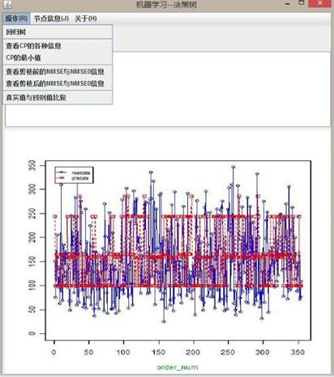

目录
- 在Java中调用R，有两种方式，一种是通过
Rserve包进行连接，使用这种包的原理是R作为服务器，而Java作为前台程序；另外一种是通过JNI进行动态连接。在这里我主要介绍如何利用Rserve进行连接。 - Java环境的配置以及开发工具
Eclipse的安装 - Java打包软件
exe4j的安装 - 利用
exe4j软件进行程序打包的教程
写在前面的话
Java与R的介绍
Java作为主流的应用软件开发语言，已经被广泛的应用到各种项目中；而R语言作为最主流的统计软件之一，以其广泛的程序包以及统计作图能力，受到越来越多人的青睐。如何 把两种语言完美的结合在一起，一直是我在思考的问题，经过查阅大量的资料，终于发现了Java与R的完美衔接，因此就有了这篇文章的介绍。
第一篇 在Java中调用R语言
本文以机器学习中的回归树算法为例，介绍Java中是如何调用R语言的；除此之外我还为此程序做了个GUI，最后通过exe4j进行打包；下面是在Java中调用R的基本步骤：
Rserve的安装
在R的任意版本中通过install.packages("Rserve")命令都可以完成Rserve包的安装，安装以后加载一下此包，通过library(Rserve)命令实现，然后通过Rserve()进行服务器的开启。
Java代码的实现
package cn.Whu.Ryl.R;
//导入Java调用R必备的包;
import org.rosuda.REngine.REXPMismatchException;
import org.rosuda.REngine.REngineException;
import org.rosuda.REngine.Rserve.*;
import rserver.function.RService;
import org.rosuda.REngine.REXP;
//######################################
import java.awt.FlowLayout;
import javax.swing.ImageIcon;
import java.awt.event.ActionEvent;
import java.awt.event.ActionListener;
import javax.swing.JButton;
import javax.swing.JFileChooser;
import javax.swing.JFrame;
import javax.swing.JMenu;
import javax.swing.JMenuBar;
import javax.swing.JMenuItem;
import javax.swing.JOptionPane;
import javax.swing.JTextArea;
import javax.swing.JScrollPane;
import javax.swing.JLabel;
import javax.swing.JToolBar;
import java.io.File;
import java.awt.*;
import java.awt.event.*;
import java.io.BufferedReader;
import java.io.FileNotFoundException;
import java.io.FileReader;
import java.io.IOException;
import java.io.BufferedReader;
import java.io.BufferedWriter;
import java.io.FileInputStream;
import java.io.FileOutputStream;
import java.io.FileWriter;
import java.io.IOException;
import java.io.InputStream;
import java.io.InputStreamReader;
import java.io.OutputStream;
import java.io.OutputStreamWriter;
import javax.swing.JScrollPane;
import javax.swing.JTextArea;
import java.io.File;
/////////////////////
import javax.imageio.ImageIO;
import javax.imageio.ImageReadParam;
import javax.imageio.ImageReader;
import javax.imageio.stream.ImageInputStream;
//////////////////////
public class Rtest extends JFrame{
private JLabel jLabel1 = new JLabel();
public JTextArea show=new JTextArea("等待程序运行...",8,57);
final JTextArea hc=new JTextArea();
final JTextArea hc1=new JTextArea();
private JMenuBar mb; //菜单棒
private JMenu fileMenu; //文件菜单
private JMenu fileMenu1; //图片显示
private JMenu helpMenu; //帮助菜单
private JMenuItem fileMenuRun,fileMenucp,fileMenuNMSE,fileMenNMSE1,fileMenupre,fileMenucpm; //回归树操作
private JMenuItem fileMenu11,fileMenu12,fileMenu13; //节点信息
private JMenuItem helpauthor,helpMenuhe,helpbug,helpcode; //帮助
//工具栏成员属性声明
private JToolBar toolBar; //工具棒
private JButton b1,b2,b3;//声明1个按钮
final Font f=new Font("sanserif",Font.PLAIN,12);
///定义Rserve类;
private RService rService;
public Rtest() throws REXPMismatchException, REngineException{
super("机器学习--决策树");
////////设置图标
//try {
// String src = "/image/logo.png"; //图片路径
//Image image=ImageIO.read(this.getClass().getResource(src));
//this.setIconImage(image); //设置图标
// } catch (IOException e) {
// e.printStackTrace();
// }
/////////////////////////////////////////////////////////////
mb = new JMenuBar(); //创建菜单棒
fileMenu = new JMenu("操作(R)");//创建菜单
fileMenuRun = new JMenuItem("回归树");
fileMenuNMSE= new JMenuItem("查看剪枝前的NMSE与NMSE0信息");
fileMenucp= new JMenuItem("查看CP的各种信息");
fileMenucpm= new JMenuItem("CP的最小值");
fileMenNMSE1= new JMenuItem("查看剪枝后的NMSE与NMSE0信息");
fileMenupre= new JMenuItem("真实值与预测值比较");
fileMenu.add(fileMenuRun);
fileMenu.addSeparator(); //添加分割线;
fileMenu.add(fileMenucp);
fileMenu.add(fileMenucpm);
fileMenu.addSeparator(); //添加分割线;
fileMenu.add(fileMenuNMSE);
fileMenu.add(fileMenNMSE1);
fileMenu.addSeparator();
fileMenu.add(fileMenupre);
fileMenucp.setEnabled(false);
fileMenucpm.setEnabled(false);
fileMenuNMSE.setEnabled(false);
fileMenNMSE1.setEnabled(false);
fileMenupre.setEnabled(false);
//图片显示;
fileMenu1 = new JMenu("节点信息(J)");//创建节点信息
fileMenu11= new JMenuItem("剪枝前的节点图");
fileMenu12= new JMenuItem("剪枝后的节点图");
fileMenu13= new JMenuItem("真实值与预测值对比图");
fileMenu1.add(fileMenu11);
fileMenu1.add(fileMenu12);
fileMenu1.addSeparator();
fileMenu1.add(fileMenu13);
fileMenu11.setEnabled(false);
fileMenu12.setEnabled(false);
fileMenu13.setEnabled(false);
///帮助
helpMenu = new JMenu("关于(H)");
helpauthor = new JMenuItem("作者(A) Ctrl+A");
helpMenuhe = new JMenuItem("帮助(H) Ctrl+H");
helpbug = new JMenuItem("日志(D) Ctrl+D");
helpcode = new JMenuItem("代码 (C) Ctrl+C");
helpMenu.add(helpauthor);
helpMenu.addSeparator();
helpMenu.add(helpbug);
helpMenu.add(helpcode);
helpMenu.addSeparator();
helpMenu.add(helpMenuhe);
//将菜单全部添加菜单棒里
mb.add(fileMenu);
mb.add(fileMenu1);
mb.add(helpMenu);
//工具栏的实现
toolBar =new JToolBar(); //创建工具棒
b1= new JButton(new ImageIcon("img/1.png"));
b2= new JButton(new ImageIcon("img/3.png"));
b3= new JButton(new ImageIcon("img/2.png"));
//把按钮全部添加到工具棒中
toolBar.add(b1);
toolBar.add(b2);
toolBar.add(b3);
b3.setEnabled(false);
b2.setEnabled(false);
//把菜单栏、工具栏、弹出菜单添加到内容面板
setJMenuBar(mb);
add(toolBar,BorderLayout.NORTH);
//////窗体布局;
setLayout(new FlowLayout(FlowLayout.LEADING));
setSize(650, 650);
setResizable(true);
setDefaultCloseOperation(JFrame.EXIT_ON_CLOSE);
setLocationRelativeTo(null);
setVisible(true);
show.setEditable(false);
add(show);
add(hc);add(hc1);
add(jLabel1);
/////设置滚动条，并添加到内容面板;
add(new JScrollPane(show));
hc.setVisible(false);hc1.setVisible(false);
jLabel1.setVisible(false);
////创建默认文件夹;
File file1 = new File("c:\\datacy");
file1.mkdirs();
file1 = new File("c:\\datacy");
file1.mkdir();
/////回归树运行;
fileMenuRun.addActionListener(new ActionListener() {
public void actionPerformed(ActionEvent e) {
show.setText(" ");
rService = new RService();
final RConnection re = rService.startTransaction(); // 开始独占工作空间
try {
REXP c1=re.eval("library(lars)");
REXP c2=re.eval("data(diabetes)");
REXP c3=re.eval("dataset<-diabetes");
REXP c4=re.eval("#查看数据以及变量");
REXP c5=re.eval("s<-str(diabetes)");
REXP c6=re.eval("#查看部分数据集");
REXP c8=re.eval("#决策树拟合");
REXP c9=re.eval("w<-diabetes[,2:3]");
REXP c10=re.eval("library(rpart.plot)");
REXP c11=re.eval("reg<-rpart(y~.,w) ");
re.eval("jpeg('c:/datacy/test1.jpg')");
re.eval("rpart.plot(reg,type=4,faclen=T)");
re.eval("dev.off()");
REXP c13=re.eval("#查看具体节点");
re.eval("p<-print(reg)");
REXP c15=re.eval("#交叉验证");
REXP c16=re.eval("w<-diabetes[,2:3] ");
REXP c17=re.eval("n<-length(w$y) ");
REXP c18=re.eval("index1<-1:n ");
REXP c19=re.eval("index2<-rep(1:5,ceiling(n/5))[1:n] ");
REXP c20=re.eval("#从n个数据中随机抽取n/5个数据作为测试集;");
REXP c21=re.eval("index2<-sample(index2,n)");
REXP c22=re.eval("NMSE<-rep(0,5)");
REXP c23=re.eval("NMSE0<-NMSE");
REXP c24=re.eval("for(i in 1:5){m<-index1[index2==i];reg<-rpart(y~.,w[-m,]);y0<-predict(reg,w[-m,]);y1<-predict(reg,w[m,]);NMSE0[i]<-mean((w$y[-m]-y0)^2)/mean((w$y[-m]-mean(w$y[-m]))^2);NMSE[i]<-mean((w$y[m]-y1)^2)/mean((w$y[m]-mean(w$y[m]))^2);}");
REXP C241=re.eval("nmse<-data.frame(NMSE,NMSE0)");
///将NMSE写入;
REXP c331=re.eval("write.csv(nmse,\"c:/datacy/NMSE.csv\")");
REXP c34=re.eval("#查看cp值");
///查看cp值;
REXP c35=re.eval("cp<-reg$cptable");
REXP c351=re.eval("write.csv(cp,\"c:/datacy/cp.csv\")");
REXP c36=re.eval("#进行剪枝");
REXP c37=re.eval("reg2<-prune(reg,cp=reg$cptable[which.min(reg$cptable[,\"xerror\"]),\"CP\"]) ");
REXP c370=re.eval("cp=reg$cptable[which.min(reg$cptable[,\"xerror\"]),\"CP\"]");
re.eval("jpeg('c:/datacy/test2.jpg')");
re.eval("rpart.plot(reg2,type=2,faclen=T)");
re.eval("dev.off()");
REXP c39=re.eval("#剪枝后的交叉验证");
REXP c40=re.eval("w<-diabetes[,2:3]");
REXP c41=re.eval("n<-length(w$y) ");
REXP c42=re.eval("index1<-1:n");
REXP c43=re.eval("index2<-rep(1:5,ceiling(n/5))[1:n] ");
REXP c44=re.eval("#从n个数据中随机抽取n/5个数据作为测试集;");
REXP c45=re.eval("index2<-sample(index2,n) ");
REXP c46=re.eval("NMSE<-rep(0,5) ");
REXP c47=re.eval("NMSE0<-NMSE");
REXP c48=re.eval("for(i in 1:5){m<-index1[index2==i];reg<-rpart(y~.,w[-m,]);y0<-predict(reg2,w[-m,]);y1<-predict(reg2,w[m,]);NMSE0[i]<-mean((w$y[-m]-y0)^2)/mean((w$y[-m]-mean(w$y[-m]))^2);NMSE[i]<-mean((w$y[m]-y1)^2)/mean((w$y[m]-mean(w$y[m]))^2);}");
REXP c55=re.eval("NMSE1<-data.frame(NMSE,NMSE0)");
///将NMSE写入;
REXP c551=re.eval("write.csv(NMSE1,\"c:/datacy/NMSE1.csv\")");
REXP c57=re.eval("#回归树进行预测");
REXP c58=re.eval("predata<-predict(reg2,data=w)");
REXP c59=re.eval("realdata<-w$y[c(1:354)]");
REXP c590=re.eval("predata<-ceiling(predata)");
REXP c60=re.eval("pre<-data.frame(predata,realdata)");
//输出预测值跟真实值;
REXP c601=re.eval("write.csv(pre,\"c:/datacy/pre.csv\")");
//输出预测值跟真实值的对比图;
re.eval("jpeg('c:/datacy/test3.jpg')");
REXP c602=re.eval("arange <- range(0,realdata,predata);plot(realdata,type=\"o\",col=\"blue\",ylim=arange,ann=FALSE);lines(predata, type=\"o\", pch=22, lty=2, col=\"red\");title(xlab=\"order_num\",col.lab=rgb(0,0.5,0));title(ylab=\" \",col.lab=rgb(0,0.5,0));legend(1,arange[2],c(\"realdata\",\"predata\"),cex=0.7,col=c(\"blue\",\"red\"),pch=21:22,lty=1:2)");
re.eval("dev.off()");
re.close();
//System.out.println(c55.asString());
hc.setText(c370.asString());
} catch (Exception y) {
System.out.println("Failed to create temp file" +y);
y.printStackTrace();
} finally {
}
show.setText("回归树程序已运行完毕！！主要输出结果为：CP信息,NMSE信息以及节点图");
fileMenucp.setEnabled(true);
fileMenuNMSE.setEnabled(true);
fileMenNMSE1.setEnabled(true);
fileMenupre.setEnabled(true);
fileMenu11.setEnabled(true);
fileMenu12.setEnabled(true);
fileMenu13.setEnabled(true);
fileMenucpm.setEnabled(true);
b2.setEnabled(true);
}
});
///查看NMSE数据;
fileMenuNMSE.addActionListener(new ActionListener() {
public void actionPerformed(ActionEvent e) {
try{show.read(new FileReader("c:/datacy/NMSE.csv"),null);}
catch(IOException s){}
BufferedWriter bw = null;
try {
OutputStream os = new FileOutputStream("c:/datacy/NMSE.csv");
bw = new BufferedWriter(new OutputStreamWriter(os));
for (String value : show.getText().split("\n")) {
bw.write(value);
bw.newLine();//换行
}
} catch (IOException e1) {
} finally {
if (bw != null) {
try {
bw.close();
} catch (IOException e1) {}
}
}
}
}
);
///查看预测值跟真实值数据;
fileMenupre.addActionListener(new ActionListener() {
public void actionPerformed(ActionEvent e) {
try{show.read(new FileReader("c:/datacy/pre.csv"),null);}
catch(IOException s){}
BufferedWriter bw = null;
try {
OutputStream os = new FileOutputStream("c:/datacy/pre.csv");
bw = new BufferedWriter(new OutputStreamWriter(os));
for (String value : show.getText().split("\n")) {
bw.write(value);
bw.newLine();//换行
}
} catch (IOException e1) {
} finally {
if (bw != null) {
try {
bw.close();
} catch (IOException e1) {}
}
}
}
}
);
///查看NMSE1数据;
fileMenNMSE1.addActionListener(new ActionListener() {
public void actionPerformed(ActionEvent e) {
try{show.read(new FileReader("c:/datacy/NMSE1.csv"),null);}
catch(IOException s){}
BufferedWriter bw = null;
try {
OutputStream os = new FileOutputStream("c:/datacy/NMSE1.csv");
bw = new BufferedWriter(new OutputStreamWriter(os));
for (String value : show.getText().split("\n")) {
bw.write(value);
bw.newLine();//换行
}
} catch (IOException e1) {
} finally {
if (bw != null) {
try {
bw.close();
} catch (IOException e1) {}
}
}
}
}
);
///查看cp值;
fileMenucp.addActionListener(new ActionListener() {
public void actionPerformed(ActionEvent e) {
try{show.read(new FileReader("c:/datacy/cp.csv"),null);}
catch(IOException s){}
BufferedWriter bw = null;
try {
OutputStream os = new FileOutputStream("c:/datacy/cp.csv");
bw = new BufferedWriter(new OutputStreamWriter(os));
for (String value : show.getText().split("\n")) {
bw.write(value);
bw.newLine();//换行
}
} catch (IOException e1) {
} finally {
if (bw != null) {
try {
bw.close();
} catch (IOException e1) {}
}
}
}
}
);
///查看最小的cp值;
fileMenucpm.addActionListener(new ActionListener() {
public void actionPerformed(ActionEvent e) {
show.setText("最小的CP值为："+"\n"+hc.getText());
}
}
);
//文件读取;
b1.addActionListener(new ActionListener() {
public void actionPerformed(ActionEvent e) {
JFileChooser jfc=new JFileChooser();
jfc.setFileSelectionMode(JFileChooser.FILES_AND_DIRECTORIES);
jfc.showDialog(new JLabel(), "选择文件：");
File file=jfc.getSelectedFile();
try{show.read(new FileReader(file),null);}
catch(IOException s){}
BufferedWriter bw = null;
try {
OutputStream os = new FileOutputStream(file);
bw = new BufferedWriter(new OutputStreamWriter(os));
for (String value : show.getText().split("\n")) {
bw.write(value);
bw.newLine();//换行
}
} catch (IOException e1) {
} finally {
if (bw != null) {
try {
bw.close();
} catch (IOException e1) {}
}
}
}
}
);
/////关于信息;
helpauthor.addActionListener(new ActionListener() {
public void actionPerformed(ActionEvent e) {
String value="作者：门斌"+"\n"+"东北财经大学"+"\n"+"© 版权所有";
int n = JOptionPane.showConfirmDialog(null, value, "关于作者", JOptionPane.YES_NO_OPTION);
}
}
);
///查看错误日志;
helpbug.addActionListener(new ActionListener() {
public void actionPerformed(ActionEvent e) {
try{show.read(new FileReader("error.log"),null);}
catch(IOException s){}
BufferedWriter bw = null;
try {
OutputStream os = new FileOutputStream("error.log");
bw = new BufferedWriter(new OutputStreamWriter(os));
for (String value : show.getText().split("\n")) {
bw.write(value);
bw.newLine();//换行
}
} catch (IOException e1) {
} finally {
if (bw != null) {
try {
bw.close();
} catch (IOException e1) {}
}
}
}
}
);
///查看代码;
helpcode.addActionListener(new ActionListener() {
public void actionPerformed(ActionEvent e) {
try{show.read(new FileReader("code.txt"),null);}
catch(IOException s){}
BufferedWriter bw = null;
try {
OutputStream os = new FileOutputStream("code.txt");
bw = new BufferedWriter(new OutputStreamWriter(os));
for (String value : show.getText().split("\n")) {
bw.write(value);
bw.newLine();//换行
}
} catch (IOException e1) {
} finally {
if (bw != null) {
try {
bw.close();
} catch (IOException e1) {}
}
}
}
}
);
/////帮助信息;
helpMenuhe.addActionListener(new ActionListener() {
public void actionPerformed(ActionEvent e) {
show.setText("正在打开帮助文档，请稍后...");
try {
Runtime.getRuntime().exec("cmd /c start http:binmen.github.io/cy");
show.setText("帮助文档已打开！！");
} catch (IOException e1) {
e1.printStackTrace();
}
}
}
);
/////剪枝前的节点图读取;
fileMenu11.addActionListener(new ActionListener() {
public void actionPerformed(ActionEvent e) {
jLabel1.setVisible(true);
int width = 630;
int height = 450;
ImageIcon pic1 = new ImageIcon("c:/datacy/test1.jpg");
pic1.setImage(pic1.getImage().getScaledInstance(width,height,Image.SCALE_DEFAULT));
jLabel1.setIcon(pic1);
add(jLabel1);
}
}
);
/////剪枝后的节点图读取;
fileMenu12.addActionListener(new ActionListener() {
public void actionPerformed(ActionEvent e) {
jLabel1.setVisible(true);
int width = 630;
int height = 450;
ImageIcon pic1 = new ImageIcon("c:/datacy/test2.jpg");
pic1.setImage(pic1.getImage().getScaledInstance(width,height,Image.SCALE_DEFAULT));
jLabel1.setIcon(pic1);
add(jLabel1);
}
}
);
/////真实值与预测值对比图;
fileMenu13.addActionListener(new ActionListener() {
public void actionPerformed(ActionEvent e) {
jLabel1.setVisible(true);
int width = 630;
int height = 480;
ImageIcon pic1 = new ImageIcon("c:/datacy/test3.jpg");
pic1.setImage(pic1.getImage().getScaledInstance(width,height,Image.SCALE_DEFAULT));
jLabel1.setIcon(pic1);
add(jLabel1);
}
}
);
/////回归树运行;
b2.addActionListener(new ActionListener() {
public void actionPerformed(ActionEvent e) {
rService = new RService();
final RConnection re = rService.startTransaction(); // 开始独占工作空间
try {
REXP c1=re.eval("library(lars)");
//REXP c2=re.eval("data(diabetes)");
REXP c3=re.eval("dataset<-diabetes");
REXP c4=re.eval("#查看数据以及变量");
REXP c5=re.eval("s<-str(diabetes)");
REXP c6=re.eval("#查看部分数据集");
REXP c8=re.eval("#决策树拟合");
REXP c9=re.eval("w<-diabetes[,2:3]");
REXP c10=re.eval("library(rpart.plot)");
REXP c11=re.eval("reg<-rpart(y~.,w) ");
re.eval("jpeg('c:/datacy/test1.jpg')");
re.eval("rpart.plot(reg,type=4,faclen=T)");
re.eval("dev.off()");
REXP c13=re.eval("#查看具体节点");
re.eval("p<-print(reg)");
REXP c15=re.eval("#交叉验证");
REXP c16=re.eval("w<-diabetes[,2:3] ");
REXP c17=re.eval("n<-length(w$y) ");
REXP c18=re.eval("index1<-1:n ");
REXP c19=re.eval("index2<-rep(1:5,ceiling(n/5))[1:n] ");
REXP c20=re.eval("#从n个数据中随机抽取n/5个数据作为测试集;");
REXP c21=re.eval("index2<-sample(index2,n)");
REXP c22=re.eval("NMSE<-rep(0,5)");
REXP c23=re.eval("NMSE0<-NMSE");
REXP c24=re.eval("for(i in 1:5){m<-index1[index2==i];reg<-rpart(y~.,w[-m,]);y0<-predict(reg,w[-m,]);y1<-predict(reg,w[m,]);NMSE0[i]<-mean((w$y[-m]-y0)^2)/mean((w$y[-m]-mean(w$y[-m]))^2);NMSE[i]<-mean((w$y[m]-y1)^2)/mean((w$y[m]-mean(w$y[m]))^2);}");
REXP C241=re.eval("nmse<-data.frame(NMSE,NMSE0)");
///将NMSE写入;
REXP c331=re.eval("write.csv(nmse,\"c:/datacy/NMSE.csv\")");
REXP c34=re.eval("#查看cp值");
///查看cp值;
REXP c35=re.eval("cp<-reg$cptable");
REXP c351=re.eval("write.csv(cp,\"c:/datacy/cp.csv\")");
REXP c36=re.eval("#进行剪枝");
REXP c37=re.eval("reg2<-prune(reg,cp=reg$cptable[which.min(reg$cptable[,\"xerror\"]),\"CP\"]) ");
REXP c370=re.eval("cp=reg$cptable[which.min(reg$cptable[,\"xerror\"]),\"CP\"]");
re.eval("jpeg('c:/datacy/test2.jpg')");
re.eval("rpart.plot(reg2,type=2,faclen=T)");
re.eval("dev.off()");
REXP c39=re.eval("#剪枝后的交叉验证");
REXP c40=re.eval("w<-diabetes[,2:3]");
REXP c41=re.eval("n<-length(w$y) ");
REXP c42=re.eval("index1<-1:n");
REXP c43=re.eval("index2<-rep(1:5,ceiling(n/5))[1:n] ");
REXP c44=re.eval("#从n个数据中随机抽取n/5个数据作为测试集;");
REXP c45=re.eval("index2<-sample(index2,n) ");
REXP c46=re.eval("NMSE<-rep(0,5) ");
REXP c47=re.eval("NMSE0<-NMSE");
REXP c48=re.eval("for(i in 1:5){m<-index1[index2==i];reg<-rpart(y~.,w[-m,]);y0<-predict(reg2,w[-m,]);y1<-predict(reg2,w[m,]);NMSE0[i]<-mean((w$y[-m]-y0)^2)/mean((w$y[-m]-mean(w$y[-m]))^2);NMSE[i]<-mean((w$y[m]-y1)^2)/mean((w$y[m]-mean(w$y[m]))^2);}");
REXP c55=re.eval("NMSE1<-data.frame(NMSE,NMSE0)");
///将NMSE写入;
REXP c551=re.eval("write.csv(NMSE1,\"c:/datacy/NMSE1.csv\")");
REXP c57=re.eval("#回归树进行预测");
REXP c58=re.eval("predata<-predict(reg2,data=w)");
REXP c59=re.eval("realdata<-w$y[c(1:354)]");
REXP c590=re.eval("predata<-ceiling(predata)");
REXP c60=re.eval("pre<-data.frame(predata,realdata)");
//输出预测值跟真实值;
REXP c601=re.eval("write.csv(pre,\"c:/datacy/pre.csv\")");
//输出预测值跟真实值的对比图;
re.eval("jpeg('c:/datacy/test3.jpg')");
REXP c602=re.eval("arange <- range(0,realdata,predata);plot(realdata,type=\"o\",col=\"blue\",ylim=arange,ann=FALSE);lines(predata, type=\"o\", pch=22, lty=2, col=\"red\");title(xlab=\"order_num\",col.lab=rgb(0,0.5,0));title(ylab=\" \",col.lab=rgb(0,0.5,0));legend(1,arange[2],c(\"realdata\",\"predata\"),cex=0.7,col=c(\"blue\",\"red\"),pch=21:22,lty=1:2)");
re.eval("dev.off()");
re.close();
//System.out.println(c55.asString());
hc.setText(c370.asString());
} catch (Exception y) {
System.out.println("Failed to create temp file" +y);
y.printStackTrace();
} finally {
}
jLabel1.setVisible(false);
show.setText("回归树程序已运行完毕！！主要输出结果为：CP信息,NMSE信息以及节点图");
fileMenucp.setEnabled(true);
fileMenuNMSE.setEnabled(true);
fileMenNMSE1.setEnabled(true);
fileMenupre.setEnabled(true);
fileMenu11.setEnabled(true);
fileMenu12.setEnabled(true);
fileMenu13.setEnabled(true);
fileMenucpm.setEnabled(true);
}
});
}
public static void main(String[] args) throws REXPMismatchException,REngineException{
new Rtest();
}
}
Java调用R必备的程序包
在Java调用R必须先导入以下包，这是Java中调用R语言必备的包
import org.rosuda.REngine.REXPMismatchException; import org.rosuda.REngine.REngineException; import org.rosuda.REngine.Rserve.*; import rserver.function.RService; import org.rosuda.REngine.REXP;
Java连接R的语句
rService = new RService(); final RConnection re = rService.startTransaction();
这是Java连接R的语句
利用exe4j对程序进行打包教程(暂未开放)
软件展示
未完待续
MENBIN 地点：中国--大连--东财